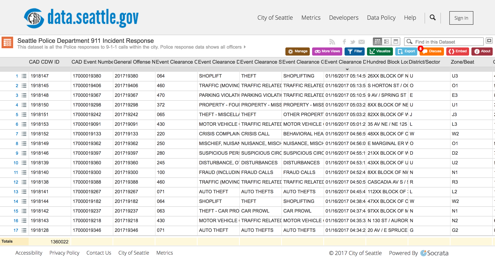
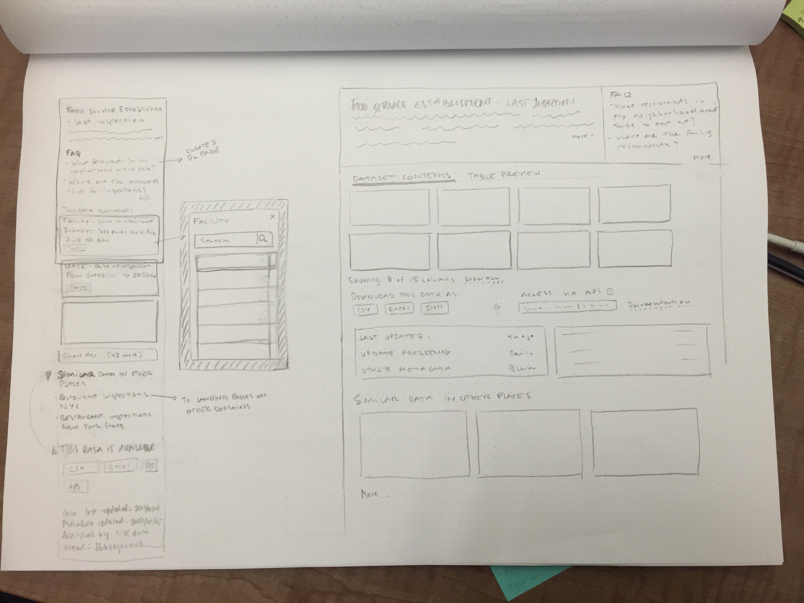
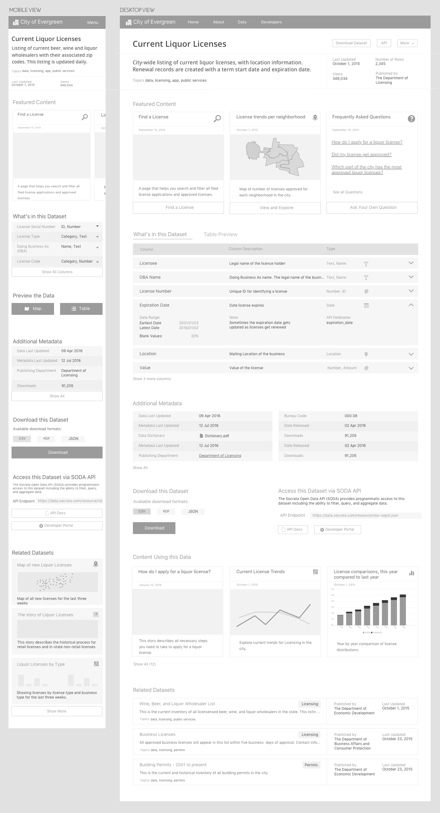

When users visit a Socrata-powered data portal, the most essential page is the experience that represents the data itself. Previously, this was a cluttered spreadsheet view that provided little context about what users were looking at. Primer was an effort to design a landing page that lends itself better to the actual end users of the product by describing what the dataset contains and what it can be used for.
 Primer - the dataset landing page
Primer - the dataset landing page
I worked as the lead designer on a cross functional team tasked with identifying the issues with the current dataset page, and designing a better solution. I was responsible for outlining the problem definition, creating wireframes, final visual designs, and creating the backlog of development tasks and requirements. I worked collaboratively with developers, product managers, and executives to plan and deliver the product from start to finish.
The majority of Socrata’s business centers around helping governments publish public data to the web in the form of interactive datasets. The notion of a dataset had been around for as long as the company itself, circa 2007, and the design of the interactive dataset page had changed little since then.
 An example of the old dataset page from City of Seattle’s open data portalThe old design and implementation had several issues:
Another issue with the dataset page was that the range of people and use cases it was trying to serve was way too broad. For example: it was expected that a government employee could use the dataset page to create a chart or graph, a civic minded developer should be able to find an API endpoint to use for his latest project, and a small business owner should easily be able to figure out if her business permit got approved or not. In the old design, all of these people are directed to the same page. This resulted in an inefficient interface that served none of our core users particularly well, as it wasn't being optimized for any particular persona.
Based on previous research conducted by our user research team, I knew that the users that typically visit our customer sites are roughly distributed in the following way:
 Data from previous research: The approximate distribution of users and their main activity
Data from previous research: The approximate distribution of users and their main activity
Through this research I recognized that there were a wide variety of use cases that needed to be accounted for, but needed to design a solution that did not fall in the trap of the old page, where one page was trying to be the final destination for all. I decided to strive to make the page less of a destination, and more of a guiding stop along the way. This decision provided the basis for the project objective that I communicated across teams and leadership:
"Build a central page that serves as an introduction and hub for interacting with a dataset that clearly tells the user that they are on the right path. The page provides a curated view of all information about the dataset, brings together child and related assets—such as visualizations, stories, similar datasets, apps, and external resources—, and guides the users to primary actions that help them get value from the data.”
At this point I ran several design and project reviews with the research team, product leadership, and the rest of the design team, weighing user needs with features that would be good for the business; e.g. focusing on finders that are a large portion of the user base, but will potentially never come back after finding what they are looking for vs analyzers and supporters that "enrich" the platform with things they create. I finally landed on the following questions that people using the new landing page needed to be able to answer, in priority order:
After clearly defining problems and goals, the next step was to understand the flow between the new dataset landing page and other parts of the product. This proved to be a bit of a challenge as Socrata’s information architecture has incurred quite a bit of design debt over the years. I created several wireframes and flows before coming up with a viable solution.
In order to get started on the page design, I took inventory of all the essential pieces of information on the old page, and added to the list any information needed to answer any of the user questions identified during the earlier design process.
In collaboration with members of our design and research team I then prioritized the importance of each piece of information, and used this to inform the visual hierarchy of the page.
 Initial thoughts on layouts, trying to think mobile firstAfter a few iterations on paper, it was clear that I needed higher fidelity to ensure the hierarchy of information corresponded to our defined questions. For example, for people to be able to answer the question “Is this the right data?” I made sure that the title and description carried the most visual weight, but I also included a section that was called “What’s in this dataset” that lists each column with a description. This makes it easy to at a glance see if this data will contain the information you’re looking for.
 Starting with black and white low fidelity mockups to get the visual hierarchy rightAfter many iterations and internal design reviews, I picked what I thought was the best one so far, and got on the phone with customers. Having gone digital here really helped, as most of Socrata's customers aren’t local to Seattle, and doing a screenshare was the quickest and cheapest way to get some feedback.
After an initial round of customer feedback, it turned out that the ability to customize content on the page was hugely important to customers, as well as being able to hide metadata that wasn’t filled out.
With the changes from the customer feedback sessions incorporated, my high fidelity designs ended up touching on the goals of answering peoples' questions in the following way:
 Full fidelity version of the Primer page - made using HTML and CSS
Full fidelity version of the Primer page - made using HTML and CSS
Developing this feature was a lot of fun. In place of static high fidelity mockups, I created a responsive, interactive prototype using HTML, CSS and JavaScript. The engineers on the team used the prototype complimented by written acceptance criteria as their specifications. This was a really effective way to communicate interactions and detailed visual design. It also really minimized the time we spent on correcting the regular little things that come up, such as font sizes, margins and paddings, as it was all available in the browser for them to inspect.
Here is an example from my prototype featuring the flow for adding content to a landing pageOne of the most challenging parts of the development phase was that we had to deal with the fact that all the data in our customers’ datasets is spread across two significantly different backends. Because of this, we had to develop one feature with two different ways of retrieving data. For example, in one backend, a column could be represented as a number, while in the other it was represented as currency. This meant that we had to consider each feature with the technical requirements of both systems, and sometimes compromise in favor of consistency between the two.
The new dataset landing pages, which we called Primer, shipped to over 200 of our customers to widespread positive reactions.